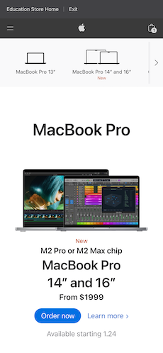
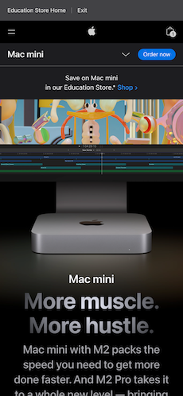

Contrast
Apple
The home Apple page shows a clear contrast between the background/pictures and font.
White Space and Clean Design
Apple

MacBook Pro landing page has a simple white background design with dark lettering/pictures and simple logos.
Alignment
Apple

The Mac Mini landing page has an expertly aligned page with the description of the product lined up as well.